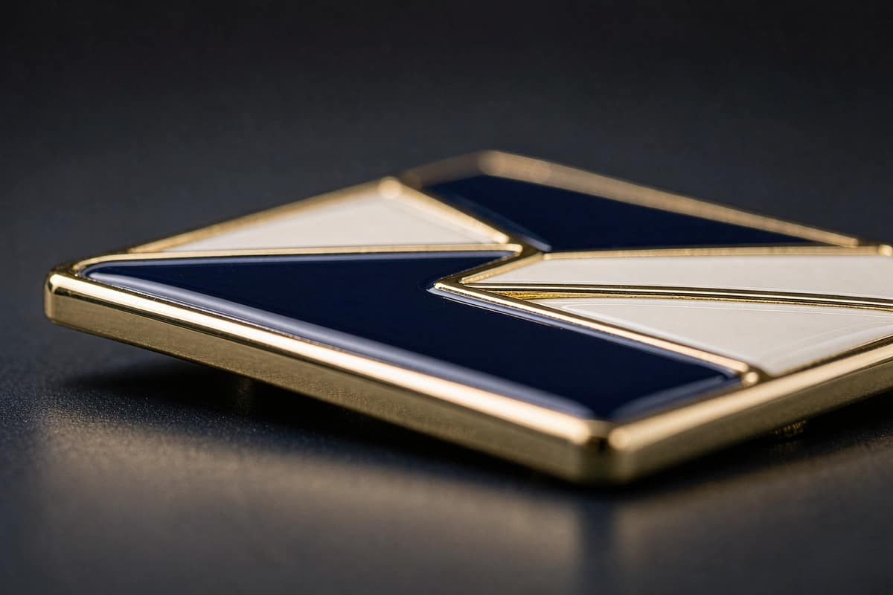

Plating finishes for custom lapel pins: 12 options
Plating is a physical property, not a colour on a screen. Shiny 24K gold, antique gold and rose gold look nearly identical in a photograph and completely different in the hand. These are the twelve we run, and how each one is applied and checked.

The finish you quote is the finish that ships
Our plating line is licensed and in-house, and every rack is XRF tested. That is the difference between a finish we say we can do and a finish we have actually run on your batch.
On hard enamel the plating runs 0.2 to 0.5 microns over a copper strike. Die cast pins take the full plating range, including antique and matte. Die struck metal can be polished, brushed, sandblasted, antiqued or matte, with the contrast between the polished relief and the recessed background doing the work.
Every plating option we run
The same twelve finishes are available across the enamel, cast and struck processes. Antique finishes recess the design in a darker tone and leave the high points bright.
Shiny 24K gold
A bright, reflective gold with no surface treatment.
Matte 24K gold
The same gold with the surface glare taken off.
Antique gold
A recessed design with the high points left bright.
Silver
A bright, reflective silver with no surface treatment.
Brushed silver
Silver with a brushed surface across the relief.
Black nickel
A dark nickel finish, brighter than matte black.
Matte black nickel
Black nickel with the surface glare taken off.
Rose gold
A warm pink gold across the whole piece.
Copper
A warm copper finish across the whole piece.
Antique brass
A recessed design with the high points left bright.
Antique silver
A recessed design with the high points left bright.
Matte ruthenium
A matte ruthenium finish across the whole piece.
Bright, matte and antique are surface treatments, not different metals
The base metal underneath is the same across the range. What changes is how the surface is finished: a bright finish reflects, a matte finish diffuses, and an antique or brushed finish darkens the recess and leaves the high points bright. That is the difference between a modern corporate pin and a heritage programme, and it is a finish decision rather than a material one.
How the plating is applied and checked
Plating, die casting, enamel and inspection all happen under one roof since 2009. The plating line is ours, which means the rack that carries your batch is the rack we test.
On hard enamel the plating thickness is 0.2 to 0.5 microns over a copper strike. Every rack is XRF tested before it leaves the workshop, so lead and cadmium content is verified by measurement rather than by paperwork. For EN71-3 and CPSIA we test the actual production batch on request.
Colour is a separate matter from plating, and it is matched on a calibrated line. Give us Pantone references and we hold that standard for the whole run. Colours not held to a Pantone standard are matched to the sample you approve, which is why we always ask for a physical sample first.

What buyers ask about plating
Twelve: shiny 24K gold, matte 24K gold, antique gold, silver, brushed silver, black nickel, matte black nickel, rose gold, copper, antique brass, antique silver and matte ruthenium.
They are surface treatments on the same base metal. The recess is darkened and the high points stay bright, which is how most heritage and military work is meant to look. On a die struck piece the same effect comes from a polished relief against a sandblasted or antique recess.
Every rack is XRF tested, so the finish we quote is the finish that ships. XRF spectrometry runs on every plated batch before it leaves the workshop, which means lead and cadmium content is verified by measurement rather than by paperwork. For EN71-3 and CPSIA we test the actual production batch on request.
Yes, and we would rather you did. A physical sample is the fastest way to settle plating, colour and clutch, because a flat render does not show how a finish catches light. A finish sample kit carries the same design across all twelve plating options.